DE
EN
Szene öffnen
Text Scene 0
Text Scene 1
Text Scene 2
Text Scene 3
Text Scene 4
Text Scene 5
Text Scene 6
Text Scene 7
Text Scene 8
Text Scene 9
0
1
2
3
4
5
6
7
8
9
Agency:
Jung v. Matt/Donau
Digital:
WILD
Illustration:
Salon Alpin
Sound Design:
Fifth Music